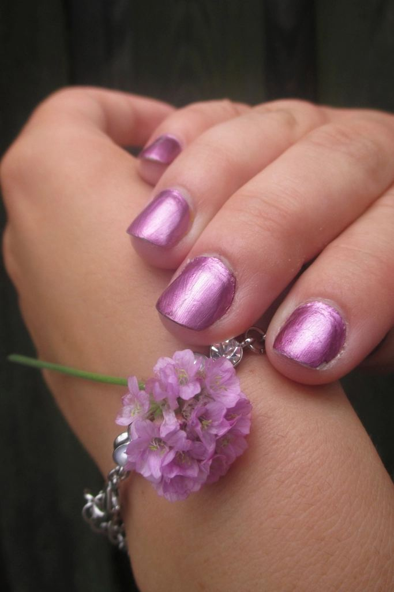
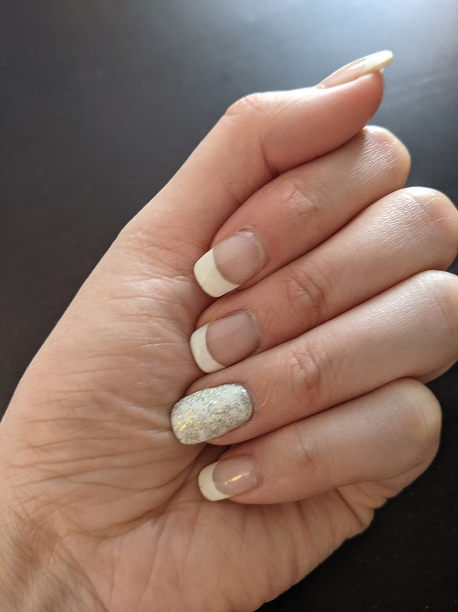
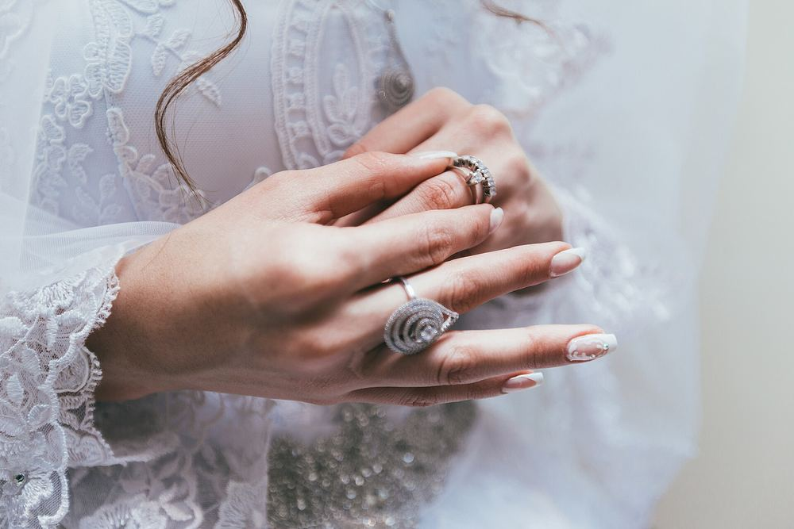
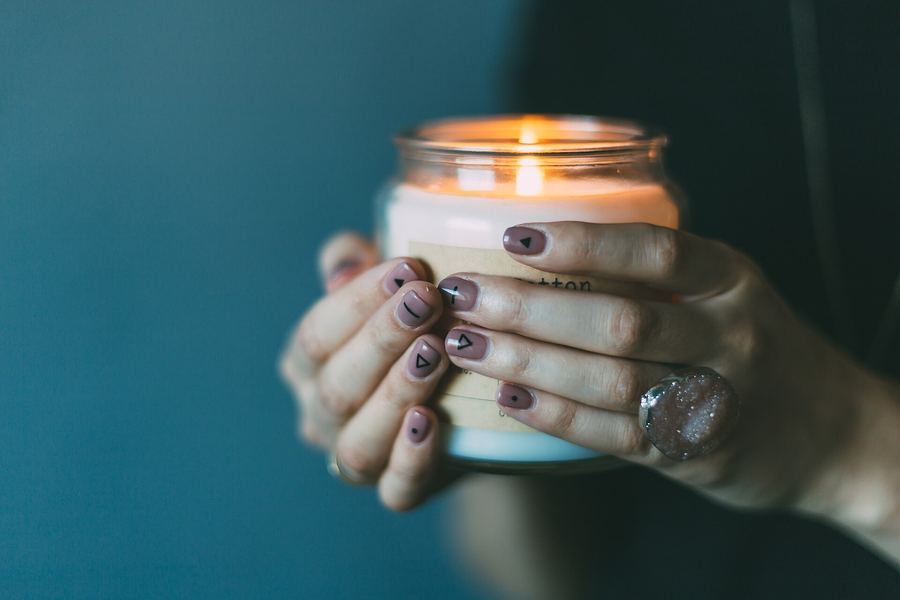
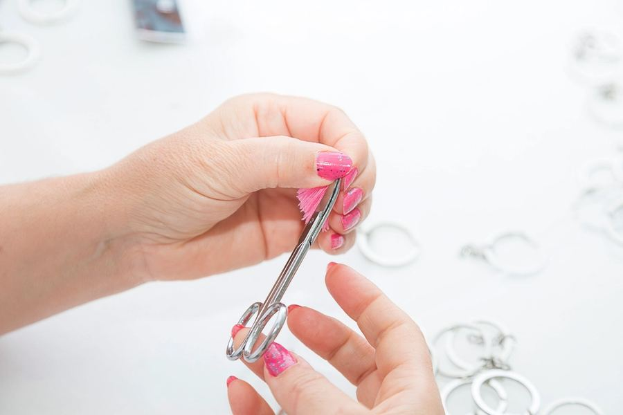
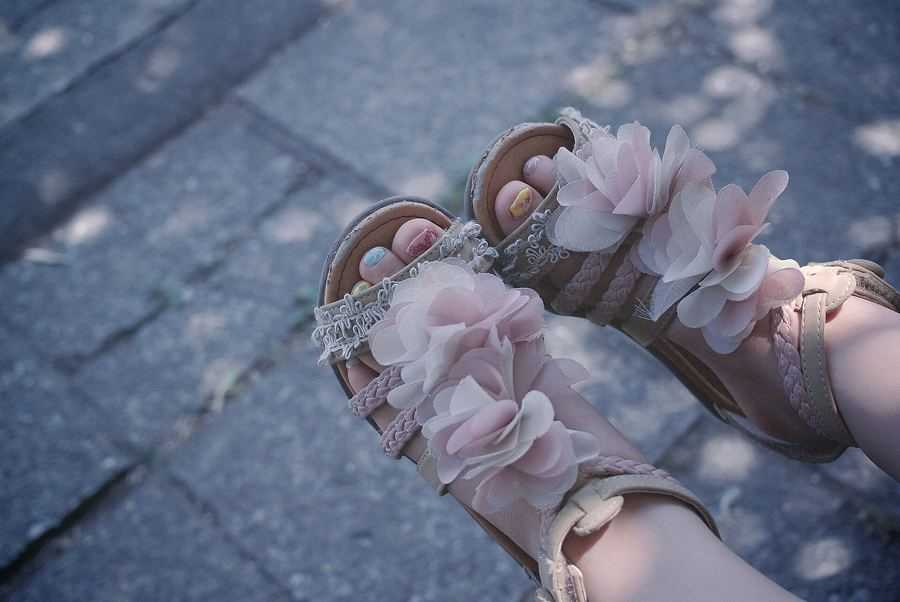
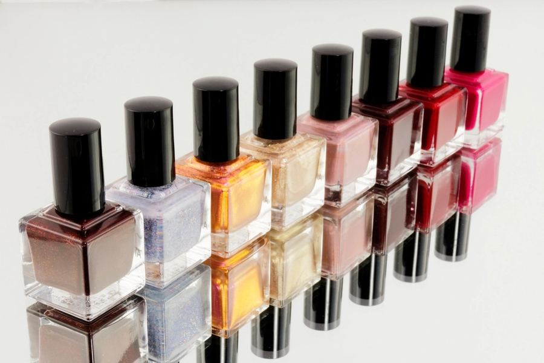
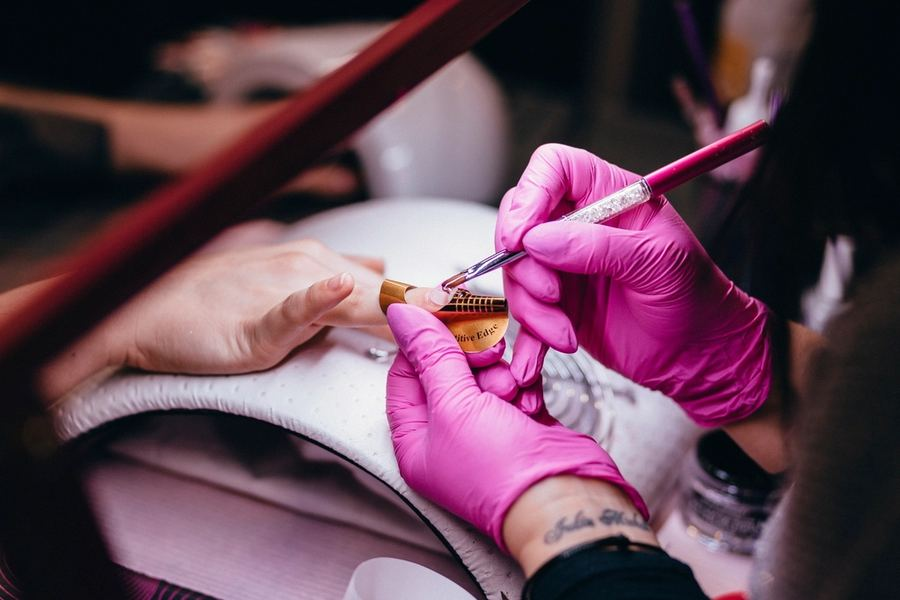
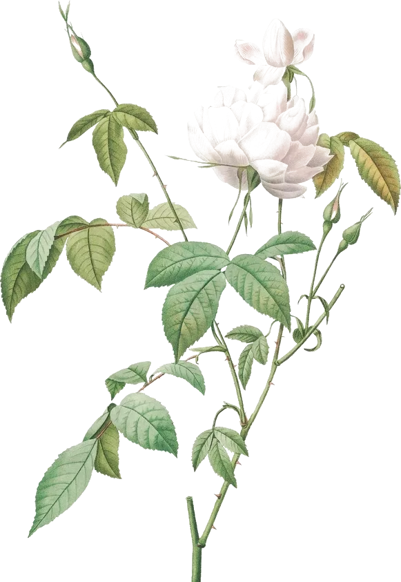
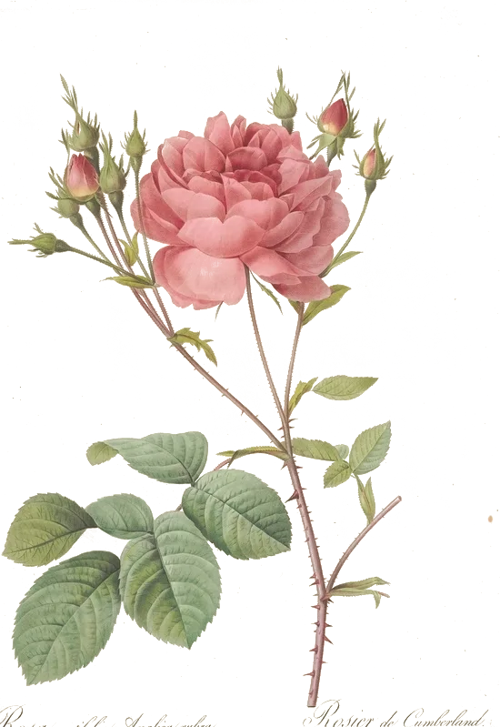

לק ג'לGel polish
צבע וברק, בג'ל Bio Sculpture.Colour and shine, in Bio Sculpture gel.
קונספט לדוגמה שנבנה עבור תמר ישראל לק ג'ל חיפה · זה אינו האתר הרשמי של העסקA sample concept built for Tamar Israel Gel Nails Haifa · This is not the business’s official website
לק ג'ל, מניקור ופדיקורGel polish, manicure & pedicure
בשדרות מוריה 118, חיפה. תמר עובדת עם ג'ל Bio Sculpture.At 118 Sderot Moriya, Haifa. Tamar works with Bio Sculpture gel.







תמונות להמחשה · גררו לסיבובIllustrative photos · drag to turn
כל שכבת ג'ל מתייבשת מתחת למנורה, והציפורן מקבלת את הברק שלה.Each layer of gel sets under the lamp, and the nail takes on its shine.
עבודה עדינה, מקרוב.Gentle work, up close.
שלושה טיפולים, ציפורן אחר ציפורן.Three treatments, one nail at a time.
צבע וברק, בג'ל Bio Sculpture.Colour and shine, in Bio Sculpture gel.

ציפורניים מסודרות וקו נקי סביבן.Shaped nails and a clean line around them.
טיפוח לכפות הרגליים ולציפורניים.Care for feet and toenails.

Bio Sculpture Gel
הג'ל שתמר עובדת איתו, כמו שמופיע בשם העסק.The gel Tamar works with, as her business name says.
5.0
36 ביקורות בגוגל36 Google reviews

מה שלקוחות כתבו על תמר.What clients wrote about Tamar.
״תמר מקצועית, מדויקת ועושה עבודה מושלמת! שירות מצוין ותמיד נעים ועם חיוך.״“Tamar is professional, precise and does perfect work! Excellent service, always pleasant and with a smile.”
Noa Weinstein
״הגעתי אליה דרך אחיינית שלי ועכשיו לקוחה קבועה. תמר אלופה! ומאז שאני אצלה הלק ג'ל לא מתקלף לי סוף סוף.״“I came to her through my niece and now I’m a regular. Tamar is a champion! And since I’ve been going to her, my gel finally doesn’t peel.”
טלי דהן
״תמר מקצוענית, קשובה, רגישה ופשוט מקסימה אני לקוחה שלה קרוב לשנה ותמיד יוצאת מרוצה״“Tamar is a real professional, attentive, sensitive and simply lovely. I’ve been her client for almost a year and always leave happy.”
Octavia Asherov
״תמר מקסימה, עדינה מקצועית וייסודית. מומלצת!״“Tamar is lovely, gentle, professional and thorough. Recommended!”
Inbal G
״תמר עושה עבודה מדהימה. ממליצה בחום!״“Tamar does amazing work. Warmly recommended!”
מיטל מרום
ביקורות מגוגל, מצוטטות כלשונן.Google reviews, translated from Hebrew.
בוחרים טיפול ויום, וההודעה נכתבת לבד.Pick a treatment and a day, and the message writes itself.
אל: תמר · 054-737-2099To: Tamar · 054-737-2099
שליחה בוואטסאפSend on WhatsAppבהודעת וואטסאפ או בשיחה לתמר: 054-737-2099.Send Tamar a WhatsApp message or call: 054-737-2099.
ראשון, שלישי, רביעי וחמישי 9:00–18:00, שישי 8:30–14:00. בשני ובשבת סגור.Sunday, Tuesday, Wednesday and Thursday 9:00–18:00, Friday 8:30–14:00. Closed Monday and Saturday.
Bio Sculpture Gel, כמו שמופיע בשם העסק בגוגל.Bio Sculpture Gel, as it appears in her business name on Google.
שדרות מוריה 118, חיפה. המפה כאן למעלה.118 Sderot Moriya, Haifa. The map is just above.